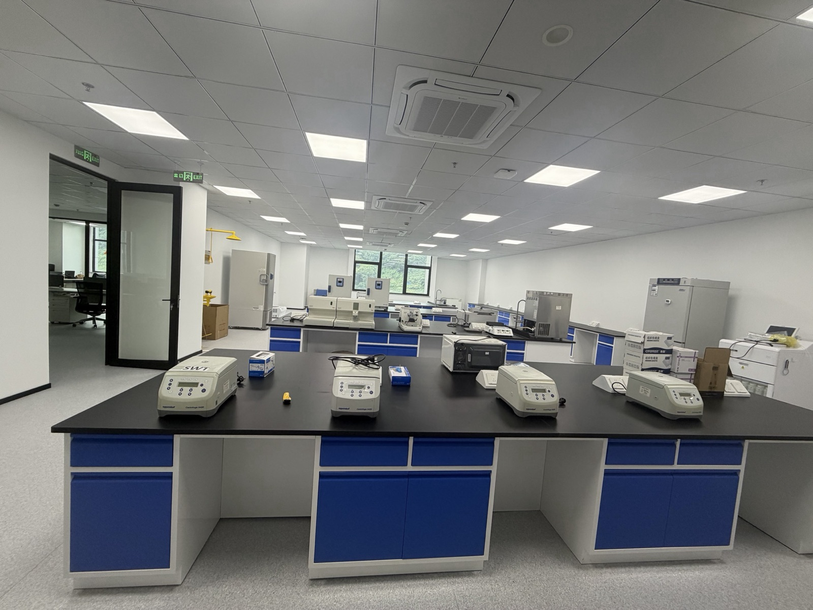
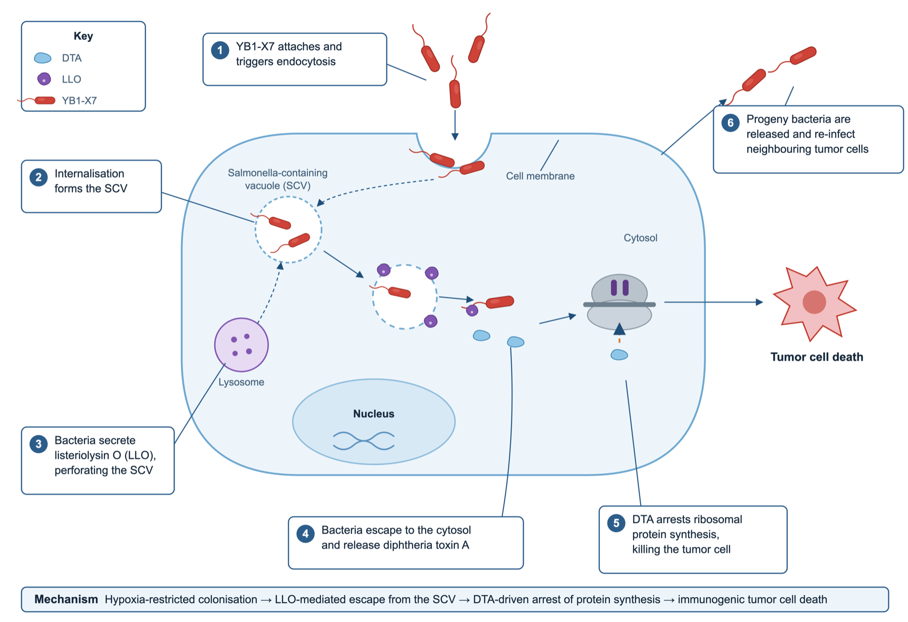

First patient dosed in the Phase I study
Following the site initiation meeting in October 2026, the first patient was screened, enrolled and dosed per protocol. The study has moved into its treatment phase and enrolment continues.
Salvectors develops programmable living therapeutics. Our lead candidate, YB1-X7, has received clinical trial clearance in both China and the United States, and a Phase I study in China started in October 2026.
View pipelineContact usShaoxing Salvectors Biotechnology Ltd. (formerly Shanghai Salvectors Biotechnology Co., Ltd.) was founded in October 2021. We are an innovation-driven company developing a new class of programmable living therapeutics.
Our bacterial drug-delivery platform is protected by a core patent portfolio built around the YB1 technology series. In August 2025 the company relocated its registered entity to Keqiao, Shaoxing.


An engineered hypoxia-regulated proliferation system, built on an attenuated strain, lets the bacteria grow in the low-oxygen regions inside tumors.
In the oxygenated environment of normal organs, the strain is rapidly lysed and cleared.
The strain can carry protein, antibody and nucleic-acid payloads, enabling a broader product pipeline.

Mechanism of action, as presented at ESMO 2026. YB1-X7 is an investigational product; its safety and efficacy are being evaluated in clinical studies.
YB1-X7 is an investigational, programmable living therapeutic developed in-house and built on a genetically engineered, attenuated Salmonella strain: the bacteria sense oxygen levels inside the tumor and either proliferate or lyse accordingly.
| Product | Route | Indication | Status |
|---|---|---|---|
| YB1-X7 | Intratumoral | Advanced solid tumors | PreclinicalINDPhase IPhase IIPhase III Phase I ongoing in China |
| YB1-X7 | Intravenous | Advanced solid tumors | PreclinicalINDPhase IPhase IIPhase III IND cleared by FDA (US); clinical trial application cleared by China's NMPA (CDE) |
YB1-X7 is investigational. It has not been approved by any regulatory authority in any jurisdiction, and its safety and efficacy have not been established.
The Salvectors AI-agent team works as people plus AI agents: our members set the direction and make the decisions, while research, engineering, intelligence and review agents divide the work and cross-check one another, driving the workflow from data analysis and study design through to review of results, and building statistical modeling frameworks.
Several AI agents collaborate and cross-check under human guidance, keeping the process rigorous and reproducible.
Hosted by the Arc Institute. Competing on public data alone, the team reached 3rd place globally at one point during the preliminary round, and finished 84th of 806 teams in the final round — the top 11%.
We aim to extend this way of working to Salmonella, building a virtual Salmonella that predicts gene expression and behaviour under different conditions, to support the design and optimisation of living therapeutics.
Following the site initiation meeting in October 2026, the first patient was screened, enrolled and dosed per protocol. The study has moved into its treatment phase and enrolment continues.
ESMO Congress 2026 was held in Madrid, Spain, on 23–27 October 2026. Results from an investigator-initiated study conducted at the Cancer Hospital, Chinese Academy of Medical Sciences, with study drug supplied and funded by Salvectors, were accepted by the congress and presented as an e-poster (FPN 1131eP). That study is separate from the Phase I registrational trial in China.

The site initiation and training meeting was held at the GCP center of the National Cancer Center / Cancer Hospital, Chinese Academy of Medical Sciences. Prof. Ning Li serves as principal investigator and Salvectors as sponsor. The multicenter study enrolls patients with advanced solid tumors.